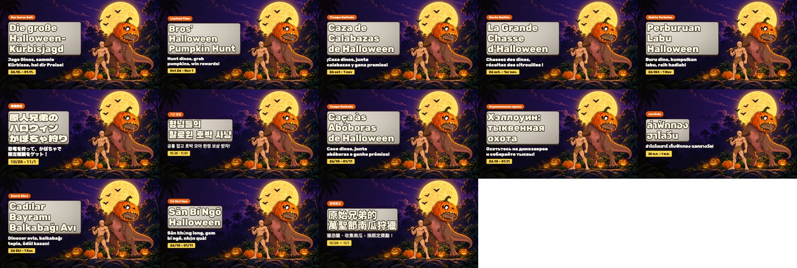

세 과제 모두 동작하는 결과물로 확인했습니다. 리뷰 378건을 분류해 답변 초안을 만든 검수 웹서비스, 13개 언어 할로윈 이벤트 키트, 광고 이상 탐지 샘플입니다. 이 문서는 무엇을, 어떤 순서로, 얼마의 노력으로 할지 정리합니다.
이 프로젝트에서 생성한 W44 할로윈 키아트(글자 없는 스토어 제출용)
실측 이 프로젝트에서 데이터로 확인고객 썬더게임즈가 알려 준 값가정 컨설턴트 가정(근거를 함께 적음)
1
요약
리뷰 대응 자동화
바로 도입한다. 절감 시간은 작지만 답변 품질과 속도가 크게 바뀐다. 지금은 60일 동안 답변이 13일에만 몰려 등록되고, 답변까지 중앙값 3.3일(답변 뒤 리뷰를 고친 10건 제외)이 걸린다실측
62시간연간 절감
주간 이벤트 제작 자동화
바로 도입한다. 셋 중 절감이 가장 크다. 디자인 1~2일 작업 중 키아트 생성과 13개 언어 배너 합성이 몇 분으로 줄어든다. 사람은 주제 승인, 수치 결정, 최종 검수를 맡는다고객가정
234~806시간연간 절감
광고 운영·분석 자동화
데이터 권한을 받은 뒤 3단계로 도입한다. 매일 1시간 넘게 걸리던 작업이 15분 안팎이 된다. 효과의 핵심은 추적 누락·CPI 급등·소재 피로를 하루 안에 찾는 것이다고객가정
188~208시간연간 절감
세 과제 합계 · 연간약 483~1,076시간 · FTE 0.25~0.56명분
FTE 1명 = 연 1,920시간가정. 인건비 환산은 시간당 비용을 받은 뒤에 계산합니다. 계산식은 4장에 있습니다.
바로 결정할 일 3가지
10/9(금)까지 할로윈 이벤트 스토어 제출 여부. App Store 사전 노출(10/12부터)과 Play 피처링 요청 마감(10/12)을 지키려면 이번 주에 제출해야 합니다. 그 전에 두 가지를 먼저 정합니다. 할로윈 주말 48시간 광고 없는 버프를 승인할지(#4, 축소안: 하루 N회), 러시아 스토어 노출을 접속 장애 해결 뒤로 미룰지(#13)입니다.
리뷰 답변 등록용 자격 증명 2종 발급과 운영 방식 승인. Play 서비스 계정('리뷰 답변' 권한)과 App Store Connect API 키가 필요합니다. 운영 방식은 A안을 권합니다. 검수 화면을 claude.ai Artifact로 올리고, 매일 예약 실행으로 초안을 만듭니다. 미답변 결제 P1(1만원 결제 후 0원 표시) 1건은 오늘 처리합니다.
광고 계정 읽기 권한과 데이터 현황 공유. 실제 매체, MMP, 미디에이션, 월 예산, 사내 메신저 등 확인 항목 C1~C16을 알려 주시면 과제 3 1단계(노코드 리포트, 2~3주)를 바로 시작합니다.
2
진단
고객이 알려 준 현재 방식
썬더게임즈가 준 원문을 그대로 옮겼습니다고객
과제
현재 방식
담당
어려움
소요
리뷰 대응
담당자가 리뷰를 직접 확인하고 번역·답변 작성(미리 작성해 놓은 답변 사용)
운영
매일 대응이 가장 좋지만 다른 업무 일정에 따라 며칠간의 리뷰를 한 번에 처리하는 경우가 많음
리뷰 1개당 2분
주간 이벤트
매주 이벤트 주제 선정, 문구 작성, 번역, 이미지 제작 및 스토어 등록을 각각 진행
운영·디자인
매주 유사한 제작 과정 반복, 국가별 문구·이미지 제작에 많은 시간
운영 매주 1~2시간, 디자인 1~2일
광고 운영
담당자가 광고 데이터를 직접 확인하고 분석·운영
마케팅
국가·캠페인·소재별 데이터 확인과 반복 분석
매일 1시간 이상
데이터로 확인한 사실 — 공개 리뷰 378건
2026-08-08 ~ 10-06, Google Play 362건 · App Store 16건실측
사실
값
리뷰 양
60일 378건, 하루 약 6.3건. 리뷰 언어 13개, 스토어×언어 16개 조합
운영 답변 문구
343건이 50종. 상위 5종이 36%(124건). 별점 1~2점 리뷰 53건에 18종
몰아서 처리
343건이 60일 중 13일에 등록됐다. 9/27 하루에 75건. 리뷰부터 답변까지 중앙값 3.3일
우선순위
P1 30 · P2 48 · P3 300. 고객센터 이관 필요 18
미답변 P1
2건. Play "1만원 결제 후 인게임 0원 표시"는 미답변 확인. App Store "로그인·게스트 모두 불가"는 RSS에 개발자 답변이 나오지 않아 App Store Connect에서 확인해야 한다
러시아어 접속 장애
P1 14건이 몰렸다(ru 리뷰 41건의 34%). 증상은 "서버 버전 확인" 무한 반복 뒤 튕김. 3.63 버전 6건, 8/13~9/30. ru 평균 별점 3.51(전체 4.23)
보상형 광고
광고 시청 뒤 재시작·보상 미지급 리뷰 4건(en 3 · pt 1, 별점 1~2)
커뮤니티 안전
인게임 채팅 욕설·성희롱 신고 1건(App Store)
이벤트 설계 신호
광고 피로(광고 관련 20건), 성장 정체(balance 12, monetization 8), 진입 장벽("이벤트 참여가 71스테이지부터"), 복귀·향수(11건, 평균 4.55점)실측
이 데이터가 세 과제를 잇습니다. 리뷰 분류 결과로 이벤트를 설계했고(과제 2), 같은 분류로 광고 피로와 광고 수익의 관계를 봅니다(과제 3).
3
과제별 적용 방안
과제 1 · 리뷰 대응 자동화
지금리뷰 확인번역미리 쓴 답변 고르기등록며칠 치를 몰아서
앞으로리뷰 수집매일 09:00유형 분류11개 유형·P1~P3·부서번역한국어답변 초안 생성맞춤·템플릿, 350자 검사담당자 검수P1부터 고치고 승인답변 등록승인분만 공식 API
공개 URL 시나리오 33/34 통과(실패 1건은 수정 전 동작을 전제한 검사), 콘솔 오류 0, 390px 가로 스크롤 없음실측
378건 전수 기계 검사 통과. 언어별 표본 38건 중 34건 통과, 금지 사항 위반 0, 답변 언어 오류 0실측
현재 템플릿 답변 vs AI 맞춤 답변 — 실제 리뷰 3건
리뷰와 답변은 데이터 원문 그대로입니다. "같은 문구 N회"는 운영 답변 343건 중 글자까지 같은 답변의 수입니다실측
광고 불만 · Google Play · 별점 1 · 2026-09-29 · gp-ko-206cefc715
광고가 적당히 나와야지.. 이건 뭐 광고가 3개씩 나오네;
현재 운영 답변 · 같은 문구 18회
안녕하세요. 원시인 형님들 키우기 GM Mr. Bow입니다. 형님의 기대에 부응하지 못한 점 깊이 사과드립니다. 말씀해주신 부분은 꼭 반영해 더 재미있는 게임으로 보답드릴게요. 앞으로 더 나은 모습으로 보답드릴 수 있도록 최선을 다하겠습니다. 감사합니다.
AI 맞춤 초안
안녕하세요, 원시인 형님들 키우기 GM Mr. Bow입니다. 광고가 한 번에 3개씩 나와 형님, 흐름이 끊기셨겠습니다. 죄송합니다. 광고 노출 빈도에 대한 말씀은 담당 팀에 그대로 전달하겠습니다. 소중한 의견 감사합니다.
현재 답변은 불만이 무엇인지 말하지 않고 "꼭 반영해"라고 약속합니다. 초안은 "3개씩"을 짚고, 약속 대신 전달만 말합니다.
접속 장애 · Google Play · 러시아어 · 별점 1 · 버전 3.63 · gp-ru-36f3661138
Бесконечная "Проверка версии с сервера" с последующей молчаливой ошибкой и выбросом на рабочий стол. Так и не запустилась.끝없는 "서버 버전 확인" 뒤에 조용히 오류가 나며 바탕화면으로 튕깁니다. 끝내 실행되지 않았습니다.
현재 운영 답변 · 같은 문구 13회
Здравствуйте, это GM Mr. Bow. Просим прощения за неудобства при использовании игры. Пожалуйста, отправьте подробности через [Настройки > Центр поддержки] в игре. Мы не можем помочь напрямую здесь, но служба поддержки сможет помочь быстрее. Спасибо.
AI 맞춤 초안
Здравствуйте, это GM Mr. Bow. Сожалеем, что игра застревает на проверке версии с сервера и не запускается. Мы передали информацию команде разработки. Если удастся зайти, пришлите модель устройства и версию ОС через [Настройки > Центр поддержки]. Спасибо за терпение.서버 버전 확인에서 멈춰 실행되지 않아 죄송합니다. 개발팀에 전달했습니다. 접속이 되시면 [설정 > 고객센터]로 기기 모델과 OS 버전을 보내 주세요.
이 사용자는 게임이 켜지지 않는데, 현재 답변은 게임 안의 고객센터로 문의하라고 합니다. 같은 증상 14건이 몰린 사실은 대시보드가 개발팀에 따로 알립니다.
광고 시청 후 보상 미지급 · Google Play · 영어 · 별점 1 · 버전 3.58 · gp-en-6c497efd01
very bad game i suggest not to download it, when you watch add there is always one option" google play" and half of the time that resets the game and you not get your rewards after 60 second of add!!! I strongly suggest to not play this game unless you want to ruin your mood by a 60sec add then no reward
현재 운영 답변 · 같은 문구 6회
Hello, this is GM Mr. Bow from Primitive Brothers. We sincerely apologize for not meeting your expectations. Your feedback will not be taken lightly. we'll make sure to reflect it in improving the game's quality and content. We'll do our best to show you a better version of the game moving forward. Thank you.
AI 맞춤 초안
Hello, this is GM Mr. Bow from Primitive Brothers. We're sorry the game resets after the ad and the reward doesn't arrive. That's frustrating after a full minute of watching. We've passed it to the dev team. Please send your device model and OS version via [Settings > Customer Center].
버그 신고에 일반 사과만 하던 것을, 증상을 짚고 재현 정보를 받는 답변으로 바꿉니다. 같은 증상 4건이 개발 전달 목록에 모입니다.
운영 전환 — 구현 가이드 요약
승인과 등록은 다릅니다. 화면의 승인 버튼은 브라우저에 저장만 합니다. 실제 등록은 post_replies.py --execute와 고객사 자격 증명으로 합니다. Play에는 GCP 서비스 계정과 Play Console '리뷰 답변' 권한이, App Store에는 ASC API 키(.p8)·Key ID·Issuer ID가 필요합니다. 답변 표시 명의는 Play에서 개발자 이름 'T.G Inc'입니다. App Store 조회 결과는 개발자 'T.G', 판매자 'Thundergames'이고, 실제 답변 표시 명의는 App Store Connect에서 확인합니다(확인 요청 B-10). 'GM Mr. Bow'는 본문 서명입니다.
추가 개발이 필요합니다.
수집을 공식 API로 바꿉니다. App Store RSS 리뷰 ID가 ASC 리뷰 ID와 같다는 보장이 없어 운영에서는 ASC API로 다시 수집합니다. Play reviews.list는 최근 1주만 줍니다.
공유 백엔드를 만듭니다. DB, 승인자, 감사 로그, 등록 큐, 중복 방지, 기존 답변 덮어쓰기 정책, 서버 쪽 350자 검사가 들어갑니다.
검수 화면에 사내 로그인(IAP)을 붙입니다.
권장 구성은 Cloud Scheduler → Cloud Run Job → Firestore, IAP, Secret Manager입니다. 개발자 1명 약 2~3주가정
API 키 없이 쓰는 방법(A안, 권장 시작점). 검수 화면을 claude.ai Artifact로 올립니다. 그러면 보는 사람의 Claude 계정으로 초안을 다시 쓰고(sample), 담당자끼리 상태를 공유하고(db), 승인자를 기록합니다(user)(claude.ai Artifact 런타임 기능 목록, 2026-10-07 이 계정에서 확인. 계정·플랜마다 다를 수 있음). 단, 스토어 등록은 여전히 서버가 해야 합니다. 매일 초안은 하네스 수동 실행, Claude Code 예약 실행(루틴), Google Cloud Vertex AI의 Claude(GCP IAM) 중 하나로 만듭니다. 지금 규모에는 Artifact + 예약 실행을 권하고, 고도화 뒤에는 Vertex AI + GCP 백엔드(B안)로 갑니다.
템플릿은 운영자가 승인한 고정 세트로 관리합니다. 지금 상한인 '언어별 최신 6종'은 매일 실행하면 다듬은 초기 템플릿을 밀어냅니다(QA 참고).
리스크. 오역·오분류가 표본 38건 중 4건 있었으므로 사람 검수를 유지합니다. 채팅 욕설·성희롱 신고가 "건의/기획"으로 분류됐던 일을 계기로, 분류 기준에 "커뮤니티·안전 신고 → P2 이상·고객센터·사람 검수" 규칙을 넣었습니다(제재는 운영). 운영 데이터는 사내 로그인 뒤에 둡니다. 실제 등록은 자격 증명이 없어 검증하지 못했으므로 첫 주에 5건으로 시험합니다.
앞으로주제 선정리뷰 신호 → 8주 캘린더제목·내용 작성기획서·공지·푸시이미지 제작키아트 3규격 + 배너 39장다국어 번역13개 언어, 글자 수 검증스토어 이벤트 등록등록 시트
사람주제 승인수치·시스템 확정[기획 확인 필요] 15건키아트 선택·검수제출·피처링 요청
자동사람
PoC — W44 「형님들의 할로윈 호박 사냥」 2026-10-26 ~ 11-01
16:9 · App Store 카드, Play 기본9:16 · App Store 상세1:1 · Play 정사각

13개 언어 가로 배너(인게임 공지·SNS용). 세로·정사각 포함 39장은 localized/에 있습니다.
항목
결과
언어
13개(ko·en·pt·es·ru·ja·zh-TW·id·th·tr·fr·de·vi)실측
스토어 문구
13개 언어 × 5개 필드 = 65개 필드, 글자 수 초과 0건실측
제출 일정
App Store·Play 제출 10/9(금), Play 피처링 마감 10/12(월), Play 일반 마감 10/22(목)
키아트
글자 없는 3규격 병렬 생성 약 4분(12:47:19 시작 → 12:51:12 마지막 파일), 장당 재생성 1회실측
배너
13개 언어 × 3규격 = 39장 합성 41초실측
QA C(이벤트 키트 검수)
통과(재검증 차단 0건). 글자 수 위반 0, 배너 39장 잘림·가림 없음, 13개 언어 이벤트명·기간 일치. 처음 검사의 차단 1건(제출 이미지 경로가 규격 미달 원본을 가리킴)은 keyart/store/ 규격 사본으로 고쳤다실측
리뷰 불만을 이벤트 설계로
리뷰 신호
이벤트 설계
광고 피로·보상 미지급(광고 관련 20건)실측
미션에 광고 시청을 넣지 않는다. 할로윈 주말 48시간 동안 광고 버프를 광고 없이 켠다
진입 장벽("이벤트 참여가 71스테이지부터")
스테이지 조건 대신 횟수형 미션(승패 무관 도전 N회)
성장 정체·보석 부족
교환소에 성장 재료와 보석
복귀·향수(11건, 평균 4.55점)
14일 이상 미접속 형님에게 복귀 호박 꾸러미
러시아어 접속 장애 14건
러시아 스토어 노출은 장애 해결 확인 뒤에 켠다(#13)
사람이 놓치기 쉬운 현지화·법규 판단
ko: 10/29(목) 이태원 참사 4주기에는 어떤 푸시도 보내지 않습니다. 파티·인파·가면 군중 표현을 쓰지 않습니다.
ko 푸시는 정보통신망법 제50조에 따라 "(광고)", 전송자 명칭, 수신 거부 방법을 넣고 21:00~08:00에는 보내지 않습니다.
id 오컬트 표현 배제, mx 망자의 날 상징 혼용 금지, br 11/2 Finados 리마인드 금지.
스토어 이미지에는 글자를 넣지 않습니다. Google Play 프로모션 이미지도 로고·슬로건·이벤트명을 금지합니다. 스토어에는 글자 없는 키아트를, 배너 39장은 인게임 공지·SNS에 씁니다.
구현 가이드 요약
매주 하네스에 "다음 주 이벤트 키트"를 요청합니다. 기획서·copy.json·스토어 시트·키아트·배너가 한 폴더에 나옵니다.
App Store는 App Store Connect API(appEvents 등)로 등록을 자동화할 수 있습니다. Google Play는 프로모션 콘텐츠 공개 API를 찾지 못해 Play Console에 붙여 넣습니다(13개 언어 약 20~30분가정).
시즌 이벤트는 시작 14일 전에 제출해야 두 스토어의 사전 노출을 모두 받습니다.
알려진 제한. 9:16 키아트의 티라노가 초록색이라 다른 두 규격(갈색)과 색이 다릅니다. 다음 판부터 색을 고정합니다. codex 전역 기본 모델이 ChatGPT 로그인에서 400 오류를 냈고, 스크립트가 이전 파일을 보고 성공으로 오판했습니다. 모델 지정과 새 파일만 성공 판정하도록 고쳤습니다. 제출에는 생성 원본이 아니라 keyart/store/ 규격 사본 3장(1920×1080·1080×1920·1080×1080)을 씁니다. 배너의 기간은 KST 날짜라(예: en "Oct 26 – Nov 1") 미주·유럽에서는 종료일이 늦게 읽힙니다. 의도한 표기이고 정확한 시각은 현지 공지가 알려 줍니다(확인 요청 4번). ja·zh-TW 가로 배너는 제목 여백이 좁고, 1:1 배너 일부 언어는 부제가 호박 등불과 살짝 겹칩니다. 가독성에는 영향이 없습니다.
7건 모두 탐지(추적 누락, 월 예산 과속, 국가 CPI 급등, 소재 피로 2, 확장 후보, 예산 신호), 미끼 미탐지, 오탐 0실측
반복 시험
시드 30개, 탐지율 90~100%실측
숫자 검증기
일부러 틀린 변형 13건 차단(부호 반전·바꿔치기·지어낸 숫자). 못 잡는 범위도 밝혔다: 키 없는 문장의 바꿔치기, 날짜, 숫자가 아닌 서술. 그래서 처음 8주는 사람이 대조 검수한다
[UA 일일 리포트 | 10/06 | 가상 데이터]
1) 어제 지출 $1,929(직전 7일 평균 대비 −1%) · 설치 1,512 · CPI $1.28(+14%) · D0 ROAS 2.8%(−9%)
2) 🔴 즉시 확인: 메타 iOS(META_A+APP_IOS_T1) KR·US 10/04~10/06 3일 연속 설치 0 — 지출 KR $233·US $349, 클릭은 정상
3) 🟠 소재: 피로 2개 — MV03(BR, CTR −35%, frequency 3.9), GV02(구글 T1, IPM −44%) / 확장 후보 1개 — MP01
4) 💰 예산 제안: 증액 1건 / 감액 1건, 순변동 +$5/일, 보류 4건. 구글 월말 예상 $27,613(+23%)
5) 오늘 할 일: MMP 연동 확인 · B01·B02 승인 여부 · 교체 소재 요청 · 구글 일 예산 $690 이하 조정 결정
일일 리포트 샘플(sample_daily_report.md에서 줄임)
도입 전에 알아야 할 플랫폼 변화(2026-10-07 공식 문서 확인)
Meta Marketing API v24.0은 2026-10-06에 만료됐습니다(최신 v26.0). 2026-01-12부터 7d_view·28d_view 어트리뷰션 값이 나오지 않습니다.
레거시 Advantage+ 앱 캠페인은 v25.0부터 생성할 수 없고 v26.0부터 수정할 수 없습니다. 새 구조로 옮기면 학습이 다시 시작됩니다.
Google 앱 캠페인은 예산·목표 CPI를 한 번에 20% 넘게 바꾸지 말라고 권장합니다.
러시아어 사용자 유입원 [확인 필요]: 2022년 Google·Meta가 러시아 광고를 중단했다는 보도가 있습니다. 지금도 유지되는지는 확인하지 못했습니다. ru 리뷰 41건의 유입원을 MMP로 확인합니다.
단계
기간
내용
1. 노코드 리포트
2~3주가정
커넥터 → 시트·Data Studio, Claude 일일 요약
2. 코드 파이프라인
4~6주가정
API 수집 → BigQuery → 분석 스크립트 → Claude 리포트 → 숫자 검증 → 메신저. 데이터 엔지니어 1명
3. 승인형 실행
8주 운영 뒤
승인한 예산 변경만 API로 실행
리스크. 광고 수익을 설치 코호트에 붙이지 못하면 ROAS 기반 제안을 믿기 어렵습니다. 그때는 범위를 데이터 점검·이상 탐지·소재 피로로 줄입니다. 교체 소재를 만들 사람이 없으면 피로 탐지 효과가 반감됩니다. 과제 2의 키아트 파이프라인을 UA 소재 변형에 쓸 수 있습니다.